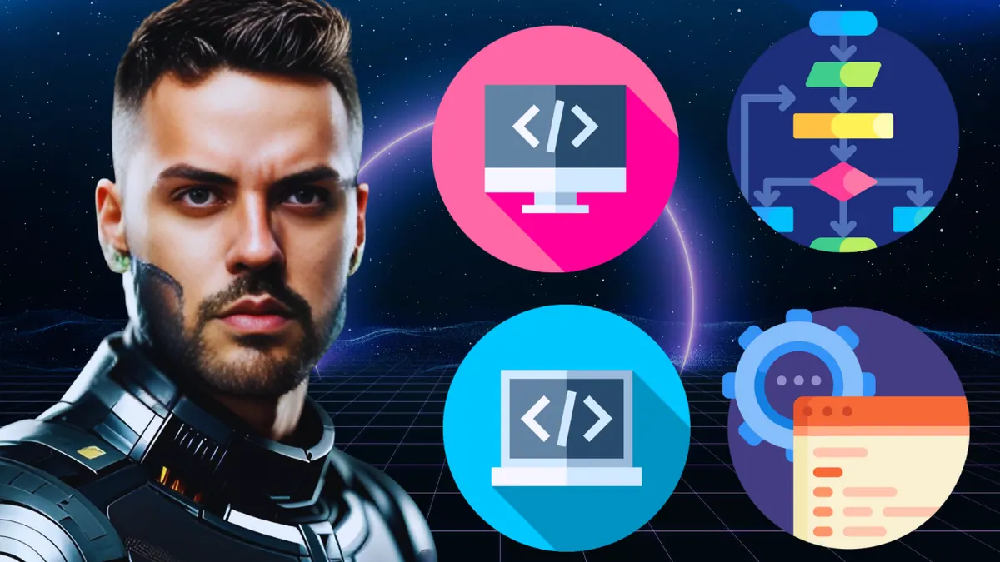
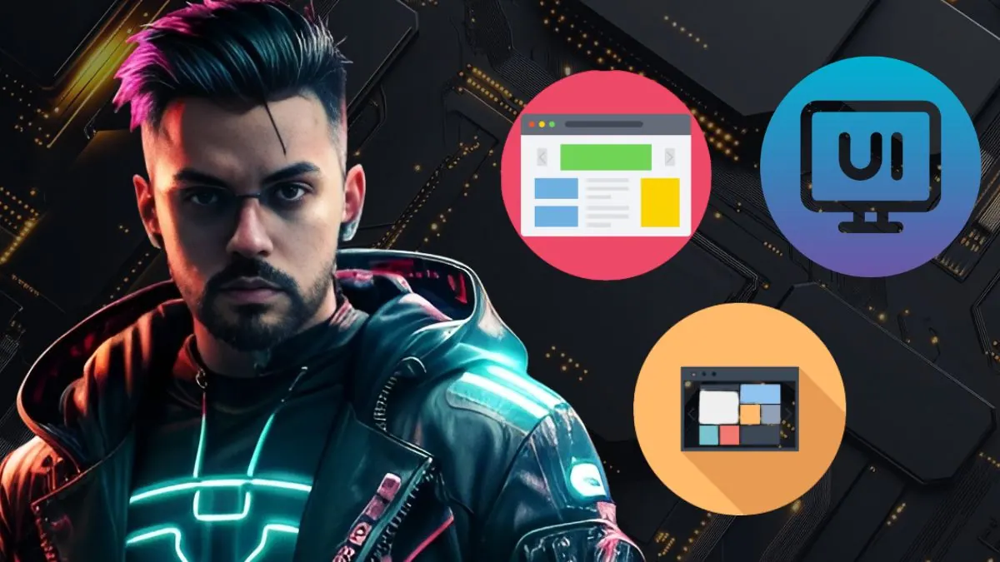
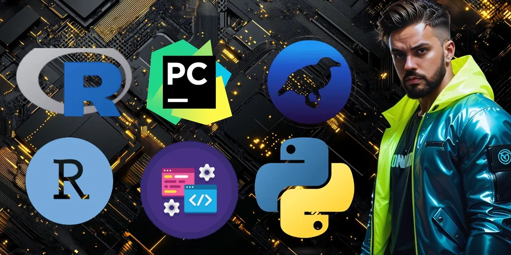
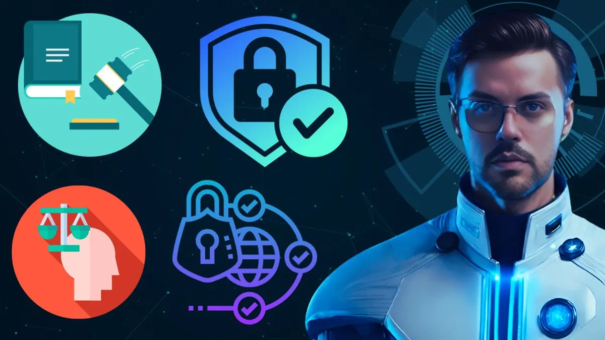
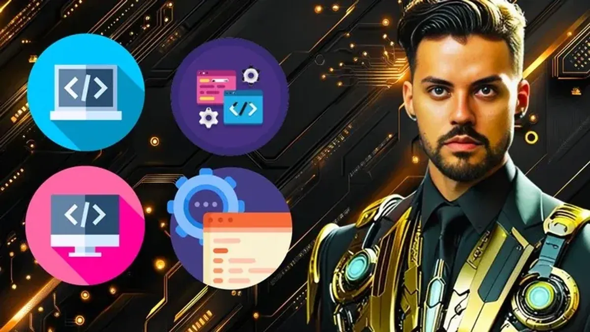
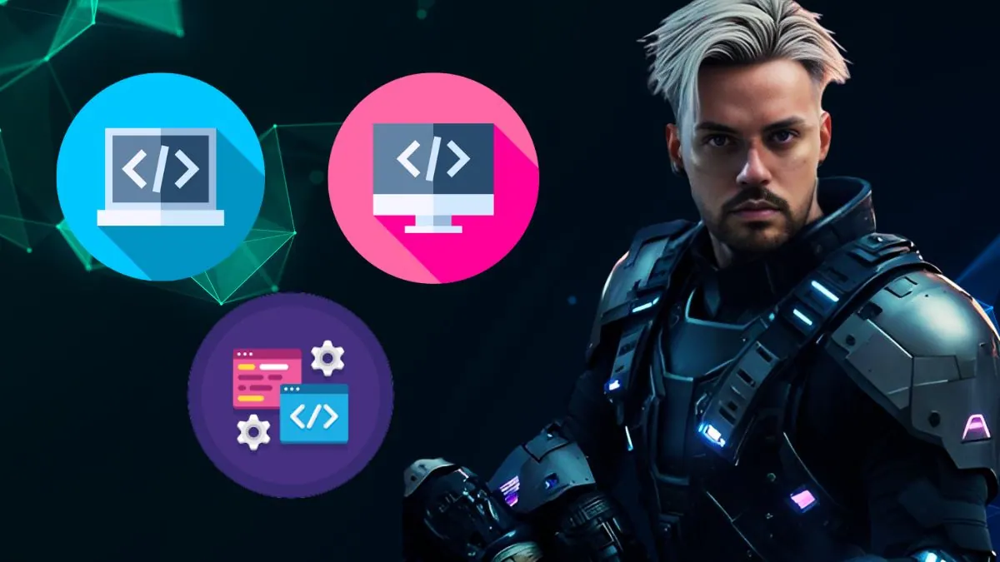
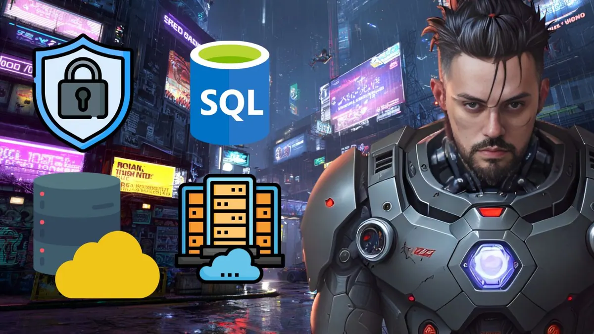

PROJECTS
Products and platforms I have contributed to as a software engineer.
Apr 2026 – Present
Contributed to the Great Pet Care platform, a Covetrus solution connecting veterinary practices and pet parents by enabling appointment scheduling, prescription management, and centralized pet health tracking. Worked on backend features for both the pet parent-facing dashboard and the platform's administrative panel, using Node.js and TypeScript. Contributed to the evolution of account management flows and pet/practice data handling, applying an AI-first development approach. Participated in architecture decisions focused on scalability and maintainability as the platform grew.
Covetrus - https://www.covetrus.com/
May 2025 – Apr 2026
Tempo
KORA is a next-generation Field Service Management (FSM) platform developed by Tempo, one of Brazil's leading companies in assistance, convenience, and specialized services. The platform modernizes post-purchase service operations, including furniture assembly, home appliance installation, and telecom services, connecting retailers, manufacturers, customers, and service providers. As a Senior Backend Software Engineer, contributed to the architecture, technical discovery, and development of scalable microservices responsible for scheduling, dispatching, and executing field services. Worked with API-first and event-driven architecture using Java, Spring Boot, Kafka, AWS, and Kubernetes.
Tempo - KORA (reference)
Sep 2022 – Sep 2025
Superbid Exchange
Worked within one of the largest digital auction transaction platforms in Latin America, connecting buyers and sellers across different industries and market segments. Contributed to 18 online auction applications built on a microservice architecture supporting thousands of daily active users and hundreds of concurrent bidders during peak events. Built real-time bidding APIs with NestJS, TypeScript, Socket.io and Redis powering the BidTv live auction experience, an auction management workflow system, indexing services feeding OpenSearch and ElasticSearch through RabbitMQ, a customer communication API using Kafka and MongoDB, and a Backend-for-Frontend in Spring Boot connecting the frontend to AI services. Also delivered product and event lifecycle systems with Spring Boot, Apache Camel, JPA, Oracle and Keycloak. The work reduced API response times by around 30% and reached 95% test coverage, with observability and automated CI/CD pipelines improving reliability.
Superbid Exchange - https://bidtv.superbid.net/
Sep 2021 – Dec 2024
Globalsys
Built and maintained the integration systems of one of Brazil's largest fashion retail groups, Arezzo&Co and Reserva, focused on solutions that drive sales across multiple marketplaces. Developed a centralized integration for product information, pricing and stock levels, replacing manual updates with automated synchronization that improved data accuracy and enabled expansion to new sales channels. Designed integrations between internal systems and marketplace platforms such as VTEX and AnyMarket, and led the modernization of legacy services to improve performance and maintainability. Built with Node.js, TypeScript, RabbitMQ, SQL Server, CouchDB, Redis, Docker and Kubernetes on AWS.
Globalsys - https://www.globalsys.com.br/index.html
Feb 2020 – Dec 2020
Universidade Regional Integrada do Alto Uruguai e das Missões - URI
Developed the "Velha Guarda" mobile application, an automated control solution for craft beer production processes. The project aimed to improve productivity, safety, and efficiency by monitoring temperature throughout different brewing stages using IoT technology. The application was developed with Flutter, Dart, Firebase, and integrated with ESP8266 NodeMCU V3 using C programming and DS18B20 temperature sensors. The solution enabled recipe management, temperature monitoring, and improved control over brewing operations.
Breadboard, DS18B20, IoT, Flutter, Firebase - Brewery video
Jan 2020 – Dec 2020
Armários Inteligentes
Developed a smart locker application based on the Internet of Things (IoT) concept, controlled through a mobile application and API. The system allows locker configuration, user management, door opening control, compartment allocation, and occupancy management. A web-based management interface provides occupancy reports and access logs.
SQL, Flutter, IoT - Smart Locker video
PROFESSIONAL EXPERIENCE
Based in Erechim, northern Rio Grande do Sul, Brazil, I hold a Bachelor's degree in Computer Science from URI-Erechim.
I am a dedicated Software Engineer and Professor, with completed postgraduate studies in Software Engineering and Database Administration.
With the goal of continuous professional development in the field of information technology, aiming to assist companies in maximizing their results through study, dedication, research, and innovation.
In recent years, I have consistently improved my skills, contributing to projects I've been a part of, always with a sense of responsibility and professionalism, and actively seeking to learn from and exchange experiences with fellow professionals. I prioritize solving business-related issues, possess a strong sense of ownership and urgency.
-
Covetrus (Apr 2026 – Present)
Product Engineer (Contract via Oowlish)
- Backend & Architecture: Node.js, TypeScript, scalable services
- Product Engineering: Translating business needs into production-ready solutions
- AI-first Development: GitHub Copilot, Cursor, LLM agents for code generation
- Quality & SDLC: Test automation, CI/CD improvements, faster and reliable releases
- Frontend: React, Next.js
- Practices: Agile (Scrum, Kanban), system design, high ownership mindset
-
Mercor (Sep 2025 – Apr 2026)
AI Coding Agent Trainer
- Programming Languages: TypeScript, JavaScript, Python
- Application server: NestJS, Express, FastAPI, React
- Databases: PostgreSQL, MySQL, MongoDB, Redis
- Cloud & DevOps: AWS, Docker, CI/CD
- Software Engineering Best Practices: Code review, architecture design, testing methodologies
- AI & Evaluation Work: AI code evaluation, model benchmarking, failure-case analysis
- Collaboration Tools: Slack, GitHub, Jira
-
Tempo (May 2025 – Apr 2026)
Senior Software Engineer
- Programming Languages: Java, JavaScript, TypeScript
- Application server: Spring Boot, React, NodeJS
- Testing: jUnit, Mockito, Jest, React Testing Library
- Databases: PostgreSQL, MySQL, MongoDB
- Source Code Management: Git, GitHub, GitLab
- Cloud: AWS, Azure
- Agile methods: Scrum, Kanban, Jira, Slack
- General tooling: Docker, Redis, Maven, Webpack, Vite
-
Udemy (Jan 2025 – Present)
Course Instructor
- Teaching Areas: Software engineering, artificial intelligence, web development, databases, data science, IoT and user experience
- Reach: 400+ students across 25 countries, with an average course rating of 4.5/5
- Course Catalog: 10 published courses covering SQL and database administration, programming logic, IoT, prompt engineering, interface design and professional ethics
- Production & Format: Recorded video lessons, hands-on projects and practical exercises for a global audience
-
Integrated Regional University
of Alto Uruguai and Missions (2024 - 2025)Professor of Computer Science
- Interface Design, Web Development, Ethics and Professional Legislation
- Special Topics in Computing I, Special Topics in Computing II, Computational Thinking
-
Superbid Exchange (Oct 2022 – May 2025)
Senior Software Engineer
- Programming Languages: JavaScript, Java, TypeScript
- Application server: Spring, Spring Boot, JavaLite, Nest, NodeJS, React
- Testing: jUnit, Mockito, Jest, SuperTest
- Messaging System: RabbitMQ
- Databases: Oracle, Mongo
- Source Code Management: Git, Github, Gitlab, CodeCommit
- Cloud: AWS
- Agile methods: Jira, Confluence, Scrum, Kanban, Slack
- General tooling: WebSocket, Docker, ElasticSearch, Kibana, Solr, Redis, New Relic, Jenkins, Postman, Insomnia
-
Globalsys (Sep 2021 – Dec 2024)
Outsourced to client: Reserva (AR & Co)Senior Software Engineer
- Programming Languages: JavaScript, TypeScript
- Application server: NodeJS, React
- Testing: Jest, SuperTest
- Messaging System: RabbitMQ
- Databases: SQL Server, CouchDB
- Source Code Management: Git, Azure, Bitbucket
- Cloud: AWS
- Agile methods: Azure, Jira, Confluence, Scrum, Kanban, Slack, Teams, Google Chat
- General tooling: Socket.io, Docker, Kubernetes, Redis, Jenkins, Postman, Insomnia, Wevo, Anymarket, Vtex
-
Compass.uol (Jan 2020 – Sep 2021)
Cloud & DevSecOps Engineer
- Programming Languages: JavaScript, Python
- Application server: NodeJS, React, Selenium
- Testing: Jest, SuperTest, k6
- Performance Engineering: Load and stress testing to measure concurrent users, requests per second and system limits in pre-production and QA environments
- Databases: Mongo
- Cloud: AWS
- Observability & Operations: Rundeck, Rancher, OpsGenie, DataDog, Zabbix, Grafana
- Source Code Management: Git, Bitbucket
- Agile methods: Jira, Confluence, Scrum, Kanban, Slack, Teams
- Career Progression: Leadership Fast Track, Junior DevOps and Intermediate Cloud & DevSecOps
-
Armários Inteligentes (Oct 2016 – Oct 2019)
Software Developer (Internship)
- Programming Languages: Java, Dart, C (Arduino), Free Pascal
- Application server: Flutter, Lazarus
- Testing: jUnit, Mockito
- Databases: MySQL
- IoT Research & Development: Smart locker prototypes with Arduino, sensors and embedded C, from hardware integration to mobile and web control
- API Documentation: RESTful API design and documentation with Swagger and OpenAPI
- Technical Documentation: User manuals, technical specifications and validation of delivered solutions
- Source Code Management: Git, Bitbucket
- Agile methods: Jira, Confluence, Scrum, Kanban
STARTUPS
With three participations in Startup Weekend Erechim/RS, two as a software developer and one as part of the volunteer organization team for the fourth edition. Responsible for managing and executing all event activities and supporting the local entrepreneurial culture.
In these editions, I had the opportunity to work in multifunctional teams with incredibly talented and motivated individuals. Together, we tackled complex and exciting challenges, from conceiving an idea to creating a functional prototype and crafting a robust business model. The fast-paced nature of Startup Weekend pushed us to learn how to collaborate effectively, make quick decisions, and efficiently prioritize tasks.
RECOMMENDATIONS
What colleagues and managers say about working with me. All taken from LinkedIn.
-
I had the pleasure of working with Jackson on two projects that were essential for my business: my personal portfolio website and a complete management system for my aesthetic clinic. He built the portfolio from the ground up and went even further on the clinic system: appointment scheduling, patient anamnesis records, and product management, integrated with Google Calendar and responsive on every device, using React, Node.js, and MongoDB. What stood out to me most was his attention to my real needs as a client. He understood my daily routine, delivered practical solutions, and always on time. I highly recommend him.
-
I had the pleasure of working with Jackson on the Kora project, where he contributed as a Java Backend Developer. Jackson is a reliable, technically strong engineer with a practical approach to solving problems. He consistently delivered with speed, collaborated very well with the team, and helped move key project initiatives forward.
-
I had the opportunity to work with Jackson for three years at Superbid, during which I served as his PM. He was our backend Java developer and stood out not only for his technical expertise but also for the additional value he brought to the team. As the owner of a programming channel on YouTube and a teacher of both in-person and Udemy courses, Jackson went far beyond coding: he masterfully documented every workflow he was involved in, covering both the technical aspects and the business rules. In addition to being an outstanding professional, Jackson is an admirable person: calm, attentive, and always willing to help.
-
It is with great enthusiasm that I recommend Jackson Felipe Magnabosco, an exceptional Senior Software Engineer with whom I have the privilege of working directly at Superbid. Jackson stands out for his expertise in back-end development and knowledge of AWS tools, delivering scalable solutions that significantly optimize systems. He demonstrates impressive mastery in Java, JavaScript, TypeScript, and Node.js, combined with an agile approach that ensures high-quality deliverables. Proactive, collaborative, and always striving for excellence, Jackson is an outstanding professional who adds value to any team.
-
Jackson is one of the most dedicated professionals I've had the pleasure of working with. He's not afraid of a challenge, seeing it as an opportunity to hone his skills. His curiosity and willingness to learn make him a constantly evolving professional. This combination of initiative and a growth mindset makes him a highly valuable team member.
-
I studied technology with him at university, and I always admired his dedication and his respect for everyone around him. Throughout our years together, he stood out not only for his technical knowledge but also for his ability to collaborate and help others understand concepts. His skill in conveying knowledge clearly and engagingly is inspiring.
-
Jackson stands out in development with his remarkable skills. He tackles technical challenges effectively, demonstrating consistent mastery in this area. His collaborative approach and willingness to share knowledge contribute positively to the work environment.
-
Jackson is an outstanding professional and a valuable member of our team. Throughout the entire time we worked together, I could see his enormous dedication and passion for programming. I also want to highlight his work ethic and positive attitude, which make him an important contributor to the projects.
-
Jackson is a professional with exceptional skills in software development. His relentless pursuit of excellence leads to continuous improvements in code quality. He values collaboration, working harmoniously with colleagues and sharing knowledge through code reviews. His dedication and commitment to improvement make him a key asset to software development teams.
TEACHING & CONTENT
COURSES FOR SALE
-

Web Development
Learn to build complete web applications from scratch, mastering HTML, CSS, JavaScript, and database management.
-

Interface Design
Master HCI: paradigms, accessibility, usability, prototyping, and user-centered design and experience.
-

Data Mining with KDD, Python, R, and Google Colab
Data Mining in Practice: KDD, Data Selection, and Preprocessing with Python, R, WEKA, and Google Colab.
-

Professional Ethics and Legislation
Rights, Duties, and Code of Ethics for IT and Technology Professionals | Updated Legislation.
-

Programming Logic and Algorithms: Complete Guide
Learn flowcharts, pseudocode, variables, conditionals, and loops to solve programming problems and build logical thinking.
-

Internet of Things: Fundamentals and Applications
Internet of Things (IoT) in Practice: Develop Projects with Sensors, Protocols, and Commercial Platforms
-

Database Administration: SQL, MySQL, and DBA
Learn security, performance, backup, and recovery to work as a professional DBA and master DBMSs
-
AI Prompt Engineering in Practice
Understand how generative AI works and learn to design powerful prompts for real-world applications.
-
Build Your Global Professional Profile
Position your resume and LinkedIn to stand out in remote and international hiring processes.
-
Live Coding JavaScript Interviews
Learn how to solve algorithm challenges and think out loud during international technical interviews.
🚧 Under Construction 🚧
See all 9 courses with full syllabus, level and prerequisites
HOTMART AFFILIATE PROGRAM
40% commission per sale
Want to earn money selling these courses? Become a Hotmart affiliate and receive a 40% commission on every sale you make. Registration is free, there is no inventory to manage, and Hotmart handles payment, delivery and student support.
- Choose a course below and request your affiliation on Hotmart.
- Once approved, you receive a unique link that tracks every sale you refer.
- Share it on social media, WhatsApp groups, blogs or with your students, and get paid per sale.
Request your affiliate link
- Web Development
- Interface Design
- Data Mining with KDD, Python, R, and Google Colab
- Professional Ethics and Legislation
- Programming Logic and Algorithms: Complete Guide
- Internet of Things: Fundamentals and Applications
- Database Administration: SQL, MySQL, and DBA
Commission rates, approval and payouts are managed by Hotmart. A free Hotmart account is required and approval of your request may take a few hours.
YOUTUBE CHANNEL
A free channel with over 1,500 videos covering software engineering, programming logic, databases, web development and career growth in technology. Short, practical lessons that complement the paid courses, with an audience of 1,165+ subscribers in Brazil and abroad.
EDUCATION & CREDENTIALS
BACHELOR'S DEGREE
Integrated Regional University of Alto Uruguai and Missions
POSTGRADUATE STUDIES
Metropolitan College
RESUME
About My Presentation
Watch my professional presentation video to learn more about my background, skills, and experience as a Software Engineer, University Professor, and Course Creator.
Resume Download
Download my complete resume in PDF format to view my professional experience, education, and skills in detail.
Download ResumeCERTIFICATES
WORKSHOPS
- Android App Development with Kotlin (Duration: 12.5 hours) Udemy.
- Dart Programming Language (Duration: 2 hours) Udemy.
- Android and iOS App Development with Flutter (Duration: 33 hours) Udemy.
- MySQL Database (Duration: 3.5 hours) Udemy.
- Introduction to MySQL Database.
- Learn Delphi and Lazarus from Scratch (Duration: 6.5 hours) Udemy.
- Integration of Solutions with Web Services (Duration: 1 hour) Udemy.
- API Specifications with Swagger and OpenAPI (Duration: 3.5 hours) Udemy.
- Understanding and Documenting REST/RESTful APIs (Duration: 5 hours) Udemy.
- Webpack: Manipulating Modules in Your Web App (Duration: 8 hours) Alura.
- Chrome DevTools: Analyze, Inspect, and Debug Your Web Pages (Duration: 9 hours) Alura.
- HTTP: Understanding the Web Under the Hood (Duration: 14 hours) Alura.
- LGPD: Getting to Know and Understanding Its Impacts (Duration: 10 hours) Alura.
- Web Performance I: Optimizing the Front-End (Duration: 20 hours) Alura.
- Introduction to Neural Networks: Deep Learning with PyTorch (Duration: 6 hours) Alura.
- HTML5 and CSS3 Part 1: The First Web Page (Duration: 8 hours) Alura.
- HTML5 and CSS3 Part 2: Positioning, Lists, and Navigation (Duration: 8 hours) Alura.
- HTML5 and CSS3 Part 3: Working with Forms and Tables (Duration: 8 hours) Alura.
- HTML5 and CSS3 Part 4: Advancing in CSS (Duration: 8 hours) Alura.
- Bootstrap 3: Creating a Responsive Single-Page (Duration: 12 hours) Alura.
- Bootstrap 4: Creating a Responsive Landing Page (Duration: 8 hours) Alura.
- CSS Architecture: Simplifying Problems (Duration: 8 hours) Alura.
- CSS Grid: Simplifying Layouts (Duration: 8 hours) Alura.
- Sass and Compass: Demystifying CSS (Duration: 8 hours) Alura.
- Flexbox: Position Elements on the Screen (Duration: 9 hours) Alura.
- Responsive Web Design: Pages that Adapt from Mobile to Desktop (Duration: 10 hours) Alura.
- Web Development
- Foreign Language and Literature 'English' (Duration: 250 hours) Topway English School, Erechim and Passo Fundo.
- Computer Technician 'Hardware, Software, Networks' (Duration: 192 hours) SENAC Erechim.
- Administrative Assistant (Duration: 180 hours) SENAC Erechim.
- Basic to Advanced Computing 'Word, Excel, Powerpoint, Windows, Linux, Typing, Internet' (Duration: 160 hours) Escola JB Informática.
- Git and Github: Control and Share Your Code (Duration: 6 hours) Alura.
- Git (Duration: 3.4 hours) Udemy.
- Java Products - Specifications vs. Proprietaries (Duration: 1 hour) Udemy.
- Sales System with Java Web (Duration: 10.5 hours) Udemy.
- Pharmacy System with Java Web (Duration: 8 hours) Udemy.
- Java Programming Fundamentals (Duration: 12 hours) Udemy.
- Programming Paradigms (Duration: 180 hours) Faculdade Metropolitana.
- JavaScript: Programming in the language of the web (Duration: 20 hours) Alura.
- Advanced JavaScript I: ES6, object-oriented programming, and design patterns (Duration: 12 hours) Alura.
- Advanced JavaScript II: ES6, object-oriented programming, and design patterns (Duration: 12 hours) Alura.
- NESTJS: Creating a REST API with TypeScript (Duration: 6 hours) Alura.
- Advanced JavaScript III: ES6, object-oriented programming, and design patterns (Duration: 12 hours) Alura.
- React part 1: Reusable components for your web app (Duration: 6 hours) Alura.
- React part 2: Validation, Routing, and API Integration (Duration: 8 hours) Alura.
- Vue part 1: Building Single Page Applications (Duration: 16 hours) Alura.
- Vue part 2: Building Single Page Applications (Duration: 16 hours) Alura.
- jQuery: Introduction to jQuery (Duration: 1 hour) Udemy.
- jQuery part 1: Master the most popular library in the market (Duration: 12 hours) Alura.
- jQuery part 2: Advance with the most popular library in the market (Duration: 12 hours) Alura.
- Node.js: Creating APIs (Duration: 2 hours) Udemy.
- Node.js and MongoDB (Duration: 15.5 hours) Udemy.
- Angular 5: Introduction to JavaScript (Duration: 4 hours) URI Campus Erechim.
PUBLISHED ARTICLES
Digital Innovation for Microbreweries: An Integrated Tool for Production Monitoring and Management
Digital Innovation for Microbreweries: An Integrated Tool for Production Monitoring and Management - Published in Brazilian Journal of Technology, Vol. 8, No. 3 (Year: 2025).
Authors: Jackson Felipe Magnabosco, Neilor Avelino Tonin.
DOI: 10.38152/bjtv8n3-002
Description: This article introduces a mobile application called Velha Guarda, designed to automate and optimize the beer production process for microbreweries. The solution integrates real-time monitoring using ESP8266 NodeMCU with temperature sensors, object-oriented methodology, and tools such as Flutter, Firebase, and Scrum-based project management. The goal is to improve safety, efficiency, productivity, and cost reduction in craft beer production of up to 100 liters.
Read the Full Article
PORTFOLIO
Applications, systems, websites and research projects. Click any screenshot to enlarge.
APPLICATIONS
SYSTEMS
Real Estate Magnus
E-COMMERCE
IoT
Virtual Reality
This event was organized for the computer science course, with the goal of contributing to the improvement of professional and civic education for those involved. The project's objective was to model the entire Campus II of URI Erechim University in 3D in less than 24 hours.
View certificateGET IN TOUCH
Open to conversations about backend engineering, architecture and teaching.